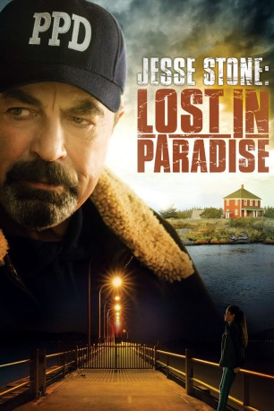

#4438 Jesse Stone 9 - Lost in Paradise
 
 IMDB-Wertung: 7.4 / 10
IMDB-Wertung: 7.4 / 10  Metascore: 0
Metascore: 0 
Polizei-Chef Jesse Stone (Tom Selleck) hat einen guten Job in den Straßen von Boston verrichtet. Die Kriminalitätsrate ist so stark gesunken, dass der mürrische Cop schon kurz davor ist, sich zu langweilen. Doch dann geschieht ein brutaler Mord, der die Polizei vor ein Rätsel stellt und es liegt nun wieder an Jesse und seinen Nachforschungen, den Mörder zu fassen, bevor es zu spät ist…
Jahr: 2015
Dauer: 89 Minuten
FSK:
Land: USA Studio: Hallmark Channel, TheTonspuren: DD5.1 - ,
Untertitel:
Auflösung: 1080p (1920x1080) Größe: 4495 MB
Genre: Drama, Krimi
Regisseur: Robert Harmon
Drehbuch: Jean Halain
Soundtrack:
Darsteller:
Datei: X:\Person\Jesse Stone\Jesse Stone 9 - Lost in Paradise (2015, FSK, 1920x1080).mkv seit 19.09.2016
Festplatte: HD Collection-7+mehr(A-Z)+Person
 Es gibt insgesamt 12 Filme in der Gruppe 'Person\Jesse Stone'
Es gibt insgesamt 12 Filme in der Gruppe 'Person\Jesse Stone'